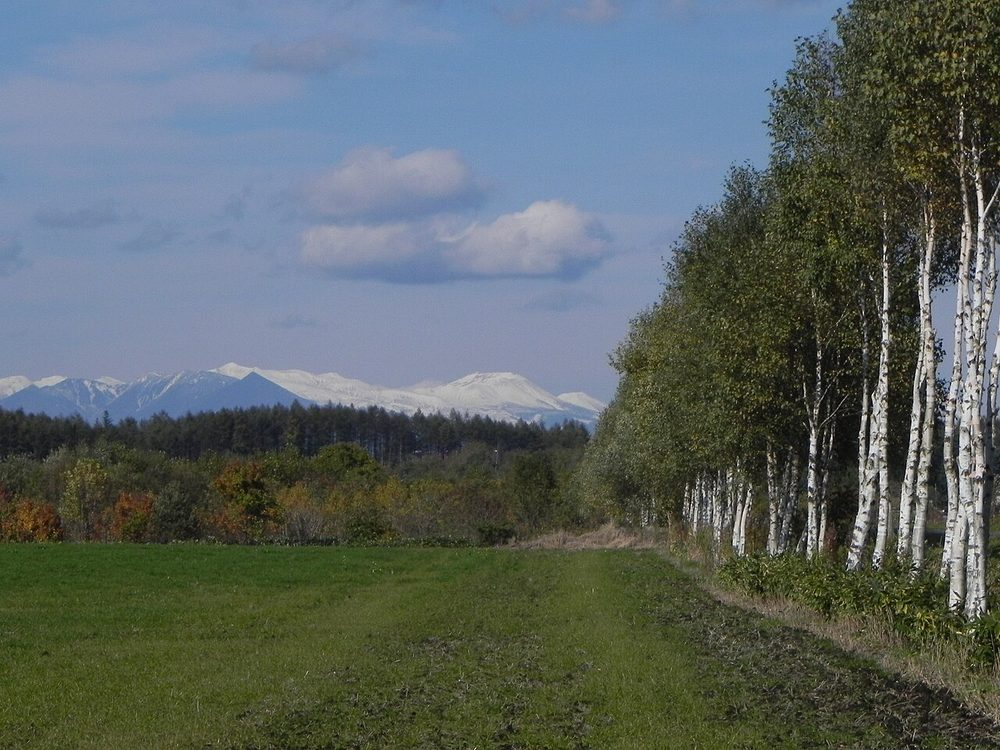

アクセス
青森県十和田市元町西2-5-2
地図

| 営業時間 | 準備中(お問い合わせください) |
|---|---|
| 定休日 | 準備中(お問い合わせください) |
| 駐車場 | 準備中(お問い合わせください) |
| 最寄り | 準備中(お問い合わせください) |
交通手段や所要時間は確認できていないため掲載していません。ご来店前にお電話でご確認ください。
SAMPLE(試作ページ)
青森県十和田市元町西2-5-2

| 営業時間 | 準備中(お問い合わせください) |
|---|---|
| 定休日 | 準備中(お問い合わせください) |
| 駐車場 | 準備中(お問い合わせください) |
| 最寄り | 準備中(お問い合わせください) |
交通手段や所要時間は確認できていないため掲載していません。ご来店前にお電話でご確認ください。
掲載写真はフリー素材のイメージで、店舗の実際の様子ではありません。他地域で撮影された写真、撮影地が不明な写真を含みます。